Chapter 2 · Part 2 — Space Motel
He read aloud:
When scientists visit the moon for short periods, they eat and sleep in the moon base.
“A space motel!” said Annie.
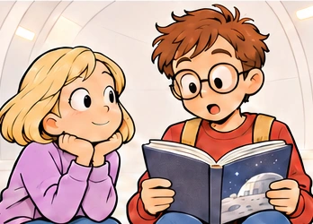
“I guess,” said Jack. He read more:
The small base has a landing and a room for storing . Air and temperature make breathing possible.
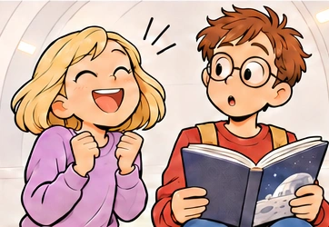
“So that’s why we can breathe,” Jack said.
“Let’s ,” said Annie. “We have to find the fourth thing for Morgan.”
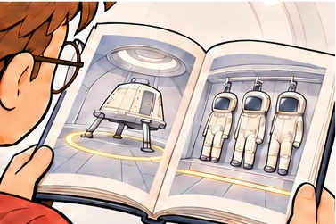
“No, first we should study this map,” said Jack. He pulled out his notebook.
“You study it,” said Annie.
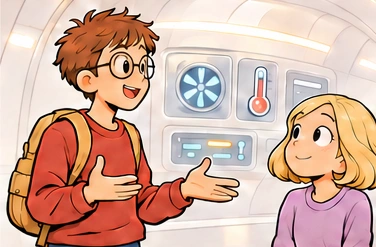
Jack copied the map. Then he drew in the tree house.
“Okay,” he said. He pointed at the X in his drawing. “We’re here.”
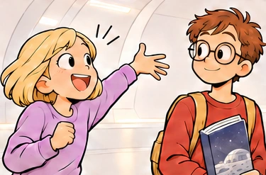
Jack looked up. Annie was gone.
“Oh, brother,” Jack said. As usual, she had left without him. Before they could even make a plan.
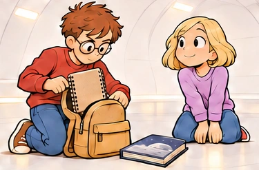
Jack put the moon book and pencil into his pack. Carrying his notebook and backpack, he started out the window.
Squeak! Squeak!
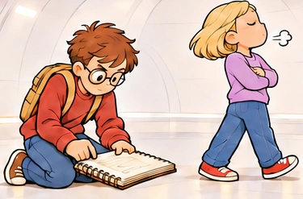
Jack looked back at Peanut. The mouse was running back and forth on the M.
“Stay here and be safe,” said Jack. “We’ll be back soon.”
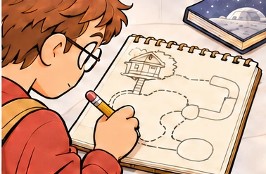
Jack swung himself over the window sill. His feet touched the floor of the landing .
“Annie!” he called.
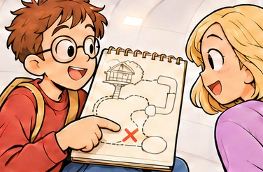
There was no answer.
Jack looked at his .
It showed only one way to go. Jack walked along the white wall to the stairs.
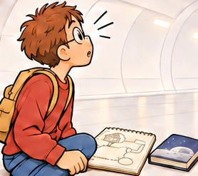
He climbed the steps to a hallway.
“Jack—hurry!” Annie was at the end of the hallway, standing in the . She peered out a window in a giant door.
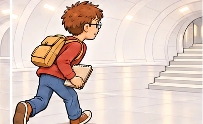
Jack hurried toward her. Annie stepped aside so he could look out the window, too.
“Oh, man,” said Jack. What he saw took his breath away.
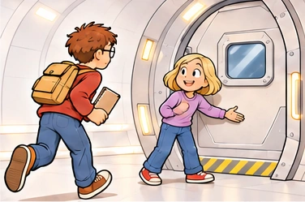
He stared at a rocky gray land. The land was filled with giant and tall mountains. The sun was shining. But the sky was ink-black!
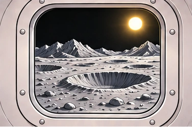
“Say hi to the moon,” Annie said softly.
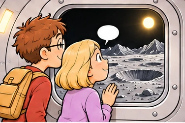